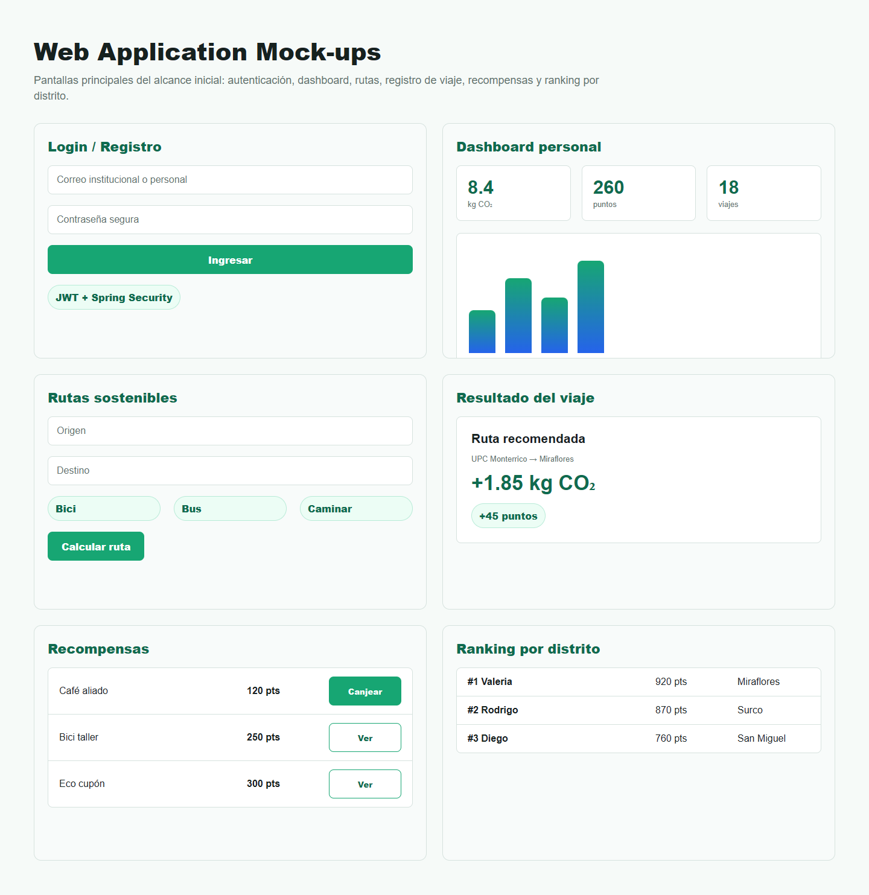
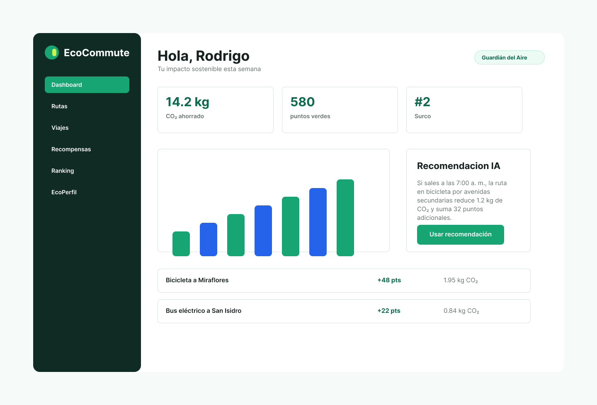
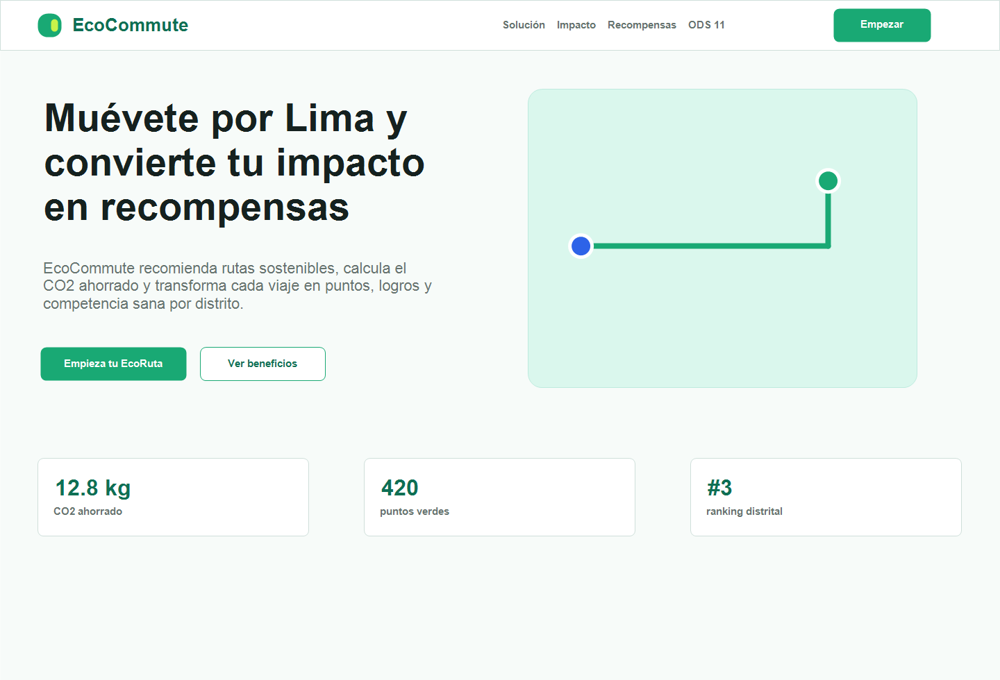

Antes de subirte al auto,
mira cuánto CO₂ podrías ahorrar.
EcoCommute compara tu recorrido en bici, a pie o en auto, te muestra el CO₂ que
dejas de emitir y te da puntos verdes por elegir mejor. Todo queda guardado en un
historial que sí se entiende de un vistazo.
En Lima la decisión de cómo movernos se toma por rapidez, costo o costumbre. Nadie
ve cuánto CO₂ produce el trayecto que acaba de elegir, y las herramientas de mapas
nomás comparten tiempo y tráfico: el impacto ambiental queda fuera de la pantalla.
Lo que falta no es otro mapa. Falta ver el costo ambiental de la decisión
antes de tomarla, y algo que te haga querer repetir
la alternativa buena la semana siguiente. Eso es lo que intentamos construir.
«Si el ahorro de CO₂ se ve igual de concreto que los minutos del viaje, la gente
lo considera.»
Qué hace hoy
Todo lo de abajo está implementado en el backend (Spring Boot) y cubierto por 23
tests automáticos que corren en cada Pull Request.
Rutas sostenibles
Ingresás origen y destino y la app arma alternativas con OSRM: qué tan lejos es,
cuánto tarda cada medio de transporte y qué te conviene según tu historial. La
recomendación con IA explica en lenguaje simple por qué sugiere esa ruta, no
nomás la señala.
Viajes y CO₂
Registrás el viaje y la app calcula el CO₂ ahorrado frente al auto y los puntos que ganás.
Dashboard
CO₂ acumulado, distancia, evolución semanal e historial de viajes, en gráficos legibles.
Ranking por distrito
Te comparás con gente de tu distrito. La competencia sana funciona mejor que el recordatorio.
Medallas y recompensas
Las medallas se desbloquean solas al alcanzar hitos; los puntos se canjean por recompensas del catálogo.
Retos
Metas semanales o mensuales que el administrador publica desde el panel de administración.
Cómo se ve
Los mismos mock-ups que presentamos en el informe (Capítulo III): pantallas
principales, dashboard y landing.

Pantallas principales: acceso con JWT, dashboard personal, rutas sostenibles,
resultado del viaje, recompensas y ranking por distrito.

Dashboard con CO₂ ahorrado, puntos, recomendación e historial.

Mock-up de la landing con la propuesta de valor.
Estamos alineados con la Meta 11.2 del ODS 11
Transporte seguro, accesible, asequible y sostenible para todas las personas.
El usuario transforma su huella de carbono en progreso visible, y la gamificación
(retos, medallas y rankings) está para sostener el hábito más allá de la primera
semana.
Quiénes lo hacemos
Seis estudiantes de Ingeniería de Sistemas de la UPC, NRC 8247, Ciclo 2026-2.
Cada quien una parte del producto; todo el proceso en el repositorio.
Rodrigo CondorIA y recomendaciones de ruta
Diego AvalosRutas, dashboard y medallas
Odar AlcocerEntidades, viajes y cálculo de CO₂
Paulo EspinozaPuntos verdes y ranking
Jeampiero RamosSeguridad, JWT y registro
Matías MariñosDocumentación, evidencias y landing
Probalo y contanos
Si algo no te cuadra o tenés una idea para Lima, escribinos: leemos todo.